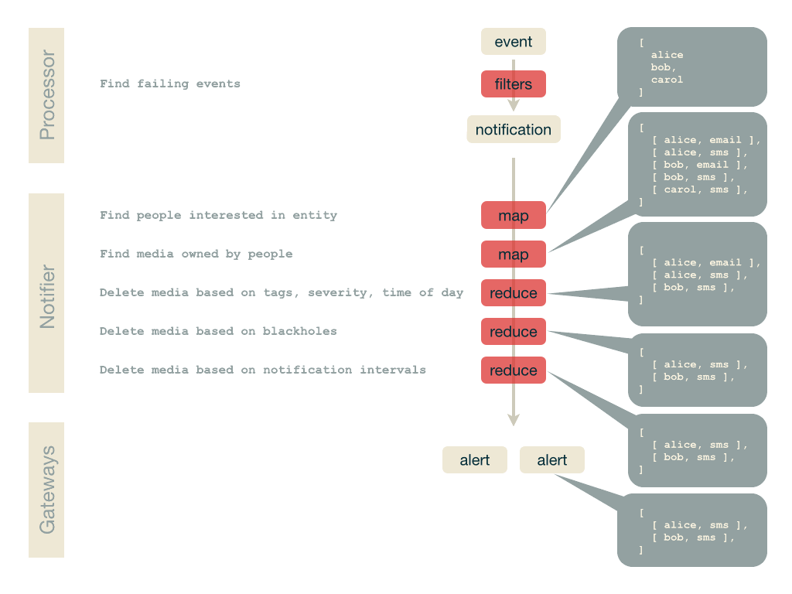

This is how events are turned into notifications, and how notifications are routed to contacts:

for f in *.png ; do convert $f $(basename $f .png).gif ; done gifsicle --delay=200 --loop *.gif > anim.gif